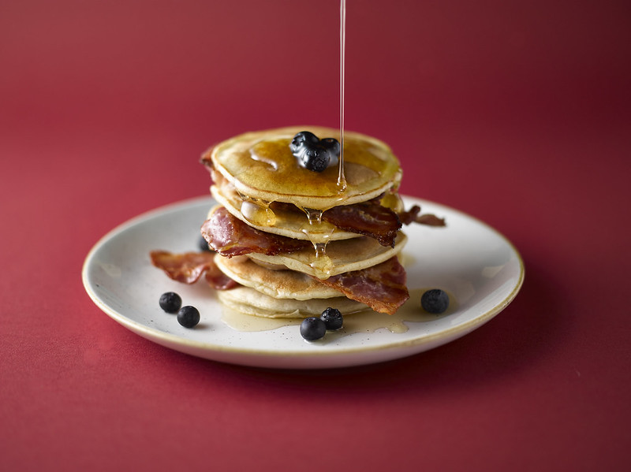

Back to Home
Pancake Syrup Recipes

Cheater Pancake Syrup
DIY pancake syrup I grew up with. It tastes fabulous without all the extra work of getting real tapped maple syrup.
Ingredients
- 2 cups white sugar
- ½ cup brown sugar
- 1 cup water
- ½ teaspoon maple flavored extract
- 1 teaspoon vanilla extract
Steps to make
-
In a saucepan, combine white sugar, brown sugar, and water. Bring to a boil, and cook for about 3 minutes.
-
Stir in maple extract and vanilla, and remove form the heat. Let cool.
-
Serve at room temperature. Store in a sealed container in the refrigerator. (It may crystallize a little if the container is not completely airtight.)